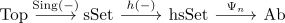

factorization of singular homology through hsSet
Proposition
For $n \geq 0$ there exists a factorization of the singular homology functor

where
- $\mathrm{Sing}(-)$ is the <>
- $\mathrm{h}(-)$ is the collapse
- $\Psi_n$ is constructed as below
Proof
objectwise
Given $X \in \mathrm{sSet}$ construct the chain complex $C_*(X)$ with
with the differential
which is a chain complex, as seen in singular homology functor.
By definition we have
Then applying the homology functor gives the desired result
welldefined on morphism
Define
where $\Psi_n(f)$ is the induced map on homology bla bla.
Now it remains to show that $f,g: X \rightarrow Y$ are homotopic, then $\Psi_n(f) = \Psi_n(g)$ or that $C_*(f) \sim C_*(g)$ are chain homotopic
there exists two options
a)
it suffices to construct a natural chain homotopy
or that a chain homotopy naturally in $X$ corresponds to $h_n \in C_{n+1}(\Delta^n \times \Delta^1)$ satisfying some relations.
b)
TODO some form of barycentric subdivision